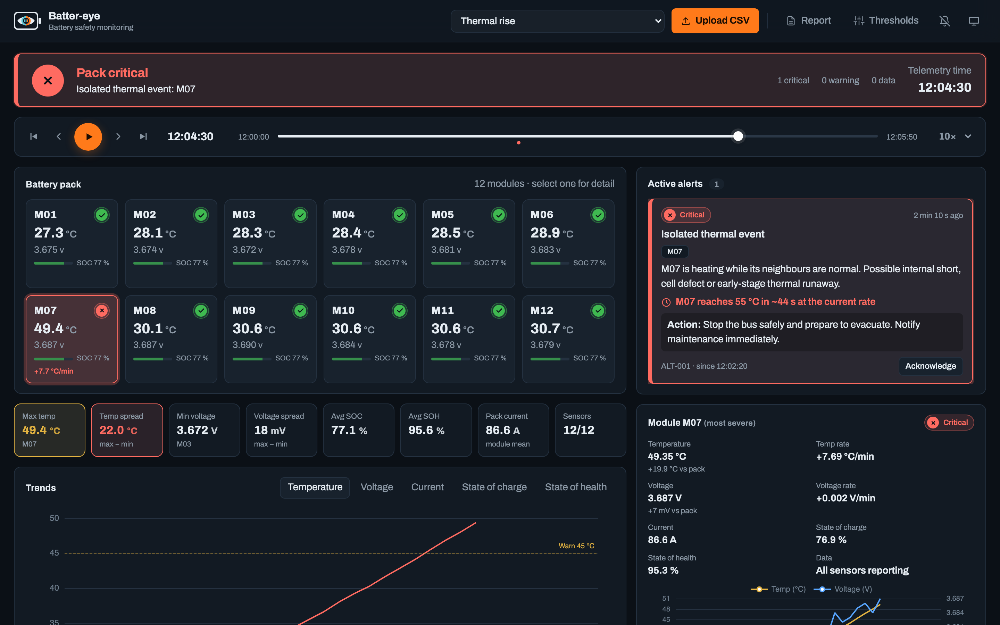
Battery safety monitoring for an electric-bus fleet. It shows what is wrong, where, how soon it becomes critical, and what to do.
UAEC 2026 · Programming
University of Alberta Engineering Competition
One glance at the screen, from across the depot. No reading of numbers.
Which of the 12 modules, how quickly, and when it will cross a safety limit.
A diagnosis and a concrete action, not a raw "threshold exceeded".
Readings drop out, freeze, spike or arrive as ERR and -999. A dead sensor must not look like a fire, and a missing reading must not look safe.
The judging file has new anomalies, missing values and edge cases. Nothing can be tuned to the five sample files.
One word, one colour, the top problem, telemetry clock.
Replay any CSV as a live feed. Alert markers on the timeline.
12 modules in series order: temperature, voltage, SOC, severity, rate.
Diagnosis, time-to-limit forecast, action, acknowledge.
Turn amber and red at the same limits the engine uses.
How we got here, for the pack and the selected module.
Thermal rise scenario, 2 min 30 s after onset. Screenshots show the current visual design; every feature on slides 3–12 was in the submitted build.
Every sample, all 12 modules pass through the same six stages. src/core is plain TypeScript with no UI code; src/ui only renders what the engine returns.
parser.tsTolerant ingest: headers, blanks, ERR, duplicates, order, gaps.
→ data-quality report
sensorIntegrity.tsMissing, stuck, out-of-range, sentinel, spike, status flag.
→ untrusted values withheld
hazards.tsAbsolute limit, deviation from pack median, rate of change.
conditions.tsPersistence, hysteresis, freeze on dropout.
diagnosis.tsGroups by adjacency, names the root cause, action, forecast.
alerts.tsOne identity per problem: raise, escalate, merge, clear.
The state at time t uses only data up to t, so replaying a file behaves exactly like a live feed.
The engine runs headless under Vitest and is cross-checked by an independent Python implementation of the same rules.
Module IDs, module count and sample interval are read from the file. Cell vs module voltage is inferred. Every threshold lives in config.ts.
Comparing each module with the rest of the pack catches every provided fault minutes before a fixed limit. Absolute limits stay as the backstop, for example when the whole pack heats together.
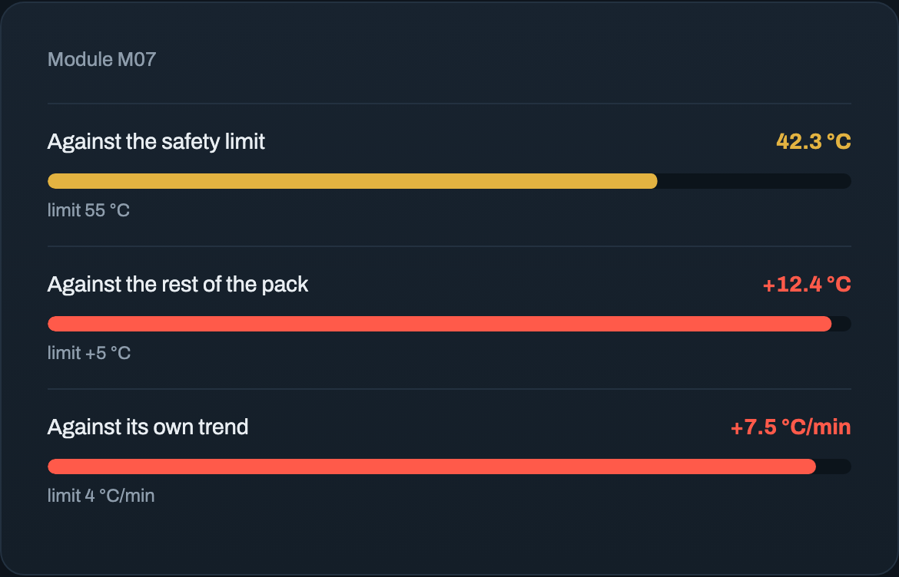
Why the pack median? One or two faulty modules cannot drag it, and it follows ambient temperature and load automatically. Untrusted sensors are excluded; at least 3 trusted modules are required.
Rate is a least-squares slope over the last 30 s, on real timestamps, so it works at any sample interval.
| Check | Warning | Critical | Why this value |
|---|---|---|---|
| Temperature | 45 °C | 55 °C | Li-ion discharge limit is 55–60 °C; ageing accelerates above ~45 °C |
| Above pack median | +5 °C | +10 °C | 2.1× the normal worst case (2.33 °C) |
| Temperature rise | 2 °C/min | 4 °C/min | Normal max 0.86 °C/min; provided faults rise 5–7.5 °C/min |
| Cell voltage low / high | 3.40 / 4.15 V | 3.20 / 4.20 V | NMC discharge cut-off ~3.0 V, charge limit 4.2 V |
| Voltage from median | 30 mV | 100 mV | 2.3× the normal worst case (13 mV), either side |
| Voltage fall rate | 0.05 V/min | 0.10 V/min | Normal max 0.016 V/min; provided fault 0.11 V/min |
| SOC / SOH | 20 / 80 % | 10 / 70 % | Time to return to depot; 80 % SOH is traction end-of-life |
Voltage is graded per cell. If a file reports module voltage (e.g. 44 V), cells in series = round(median V / 3.7) and every limit scales. All values are editable live in the Thresholds panel.
alerts on the normal dataset,
at every one of its 36 timestamps
3 samples to raise a warning, 2 for critical. One noisy sample can never alert.
Must recover past the limit by a margin (2 °C, 30 mV) for 3 samples to clear. No flicker at the boundary.
While a sensor is untrusted, its hazards neither clear nor progress. Unknown is not safe.
An alert keeps its ID as it grows, escalates or merges. No floods of duplicates.
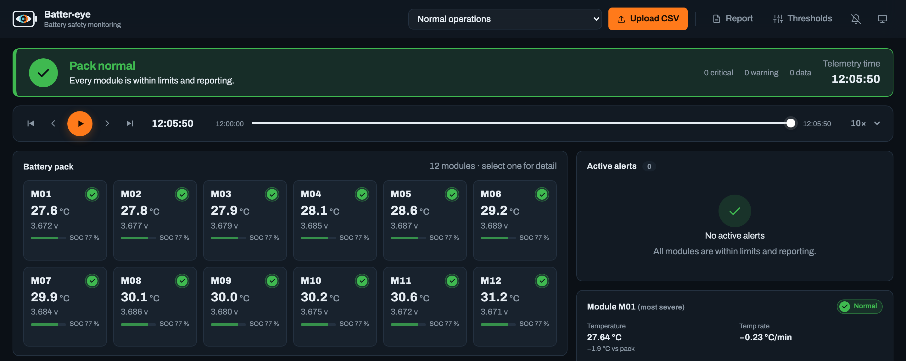
Normal operations at the last sample: "Pack normal", no active alerts.
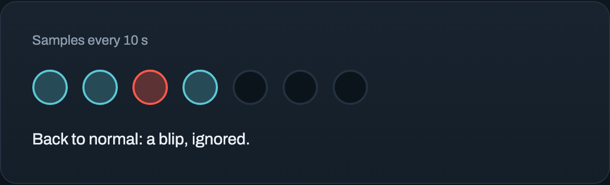
A one-sample blip is logged as "Ignored", never raised.
-999), corrupted (ERR, abc), implausible jumps and sensor status flags.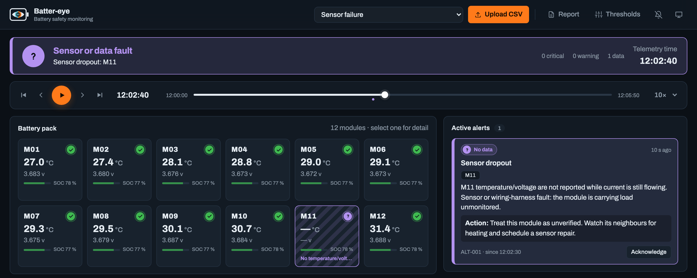
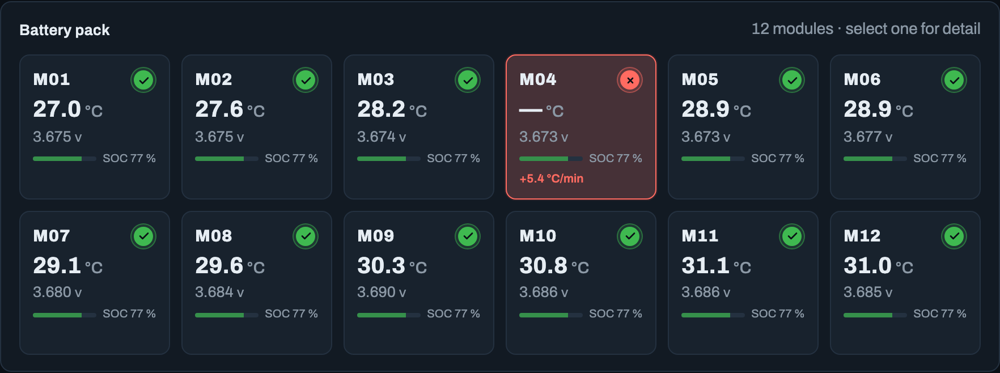
M04 heating, then its temperature sensor drops out: still critical.
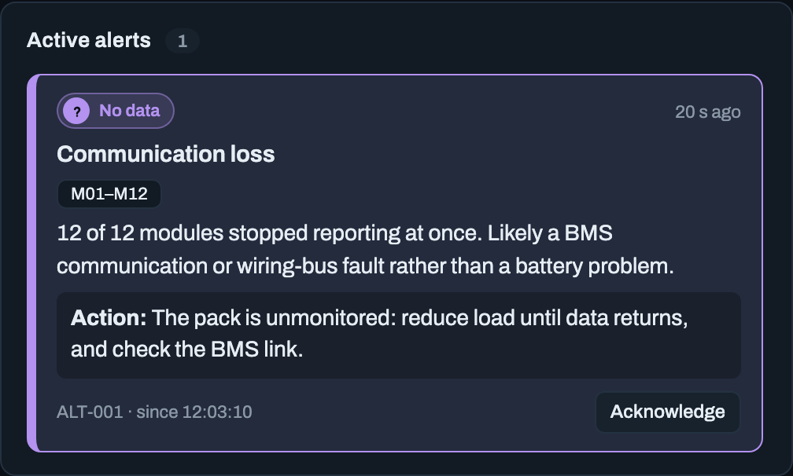
Pack-wide dropout: one alert with a BMS-link action.
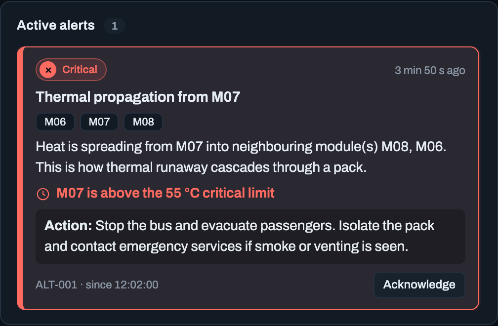
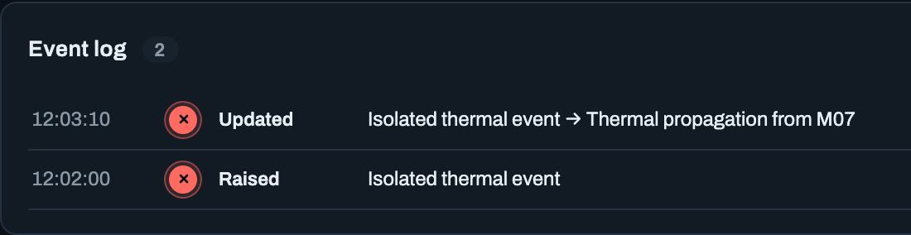
ALT-001 kept its identity: raised as an isolated thermal event on M07, then updated to propagation when M06 and M08 followed.
| Pattern the engine sees | Diagnosis |
|---|---|
| One module heating, neighbours normal | Isolated thermal event |
| Same module heating and voltage falling | Suspected internal short circuit |
| Adjacent modules heating together | Multi-module heating: check coolant to that section |
| Neighbours start ≥ 30 s after a source | Thermal propagation from Mxx |
| ≥ 75 % of modules, or the median, rising | Pack-wide temperature rise: cooling, HVAC, load |
| One module's voltage falling | Module voltage drop |
| T/V missing while current still flows | Sensor or wiring-harness fault |
Forecast: at the current slope, when the module reaches the critical limit ("M07 reaches 55 °C in ~44 s"). Every diagnosis maps to a concrete action for the driver or depot.
Quiet dark base. Healthy modules and trend lines stay neutral; orange is only for actions.
Every state has an icon and a word; data faults are hatched. Safe for colour-blind operators and projectors.
Status, then alerts, then the pack map, KPIs, trends and the log.
Modules in series order, so heat spreading between neighbours is visible on the map.
Acknowledge, scrub to any alert, export, tune thresholds. Optional audible alarm, keyboard control, reduced motion respected.
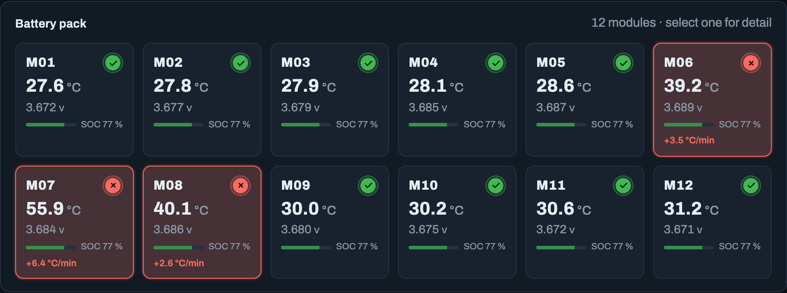
Within all limits
Logged, no action needed
Sensor problem; state unverified
Developing problem; act soon
Immediate action; pulses until acknowledged
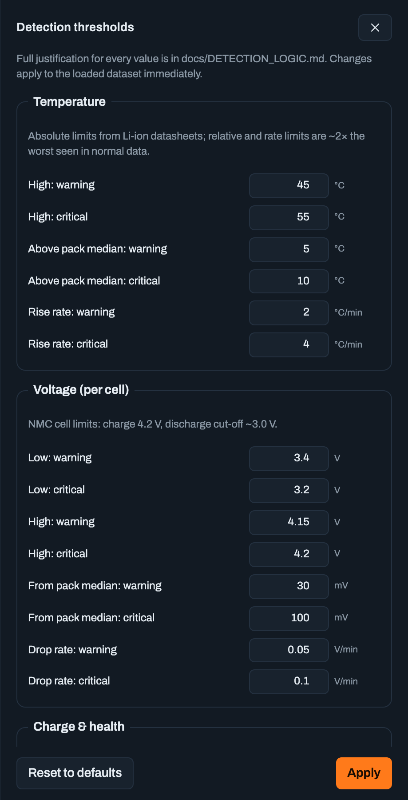
Thresholds panel: change a limit, the file is re-analysed instantly.
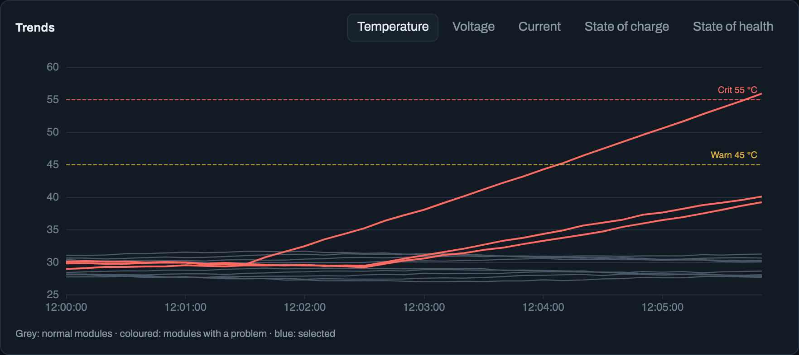
Historical trends for temperature, voltage, current, SOC and SOH, with warning and critical lines. Healthy modules grey, troubled modules in their severity colour.
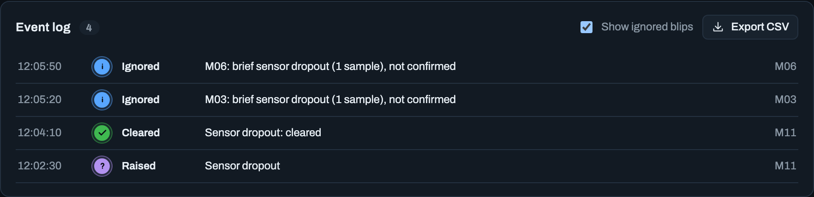
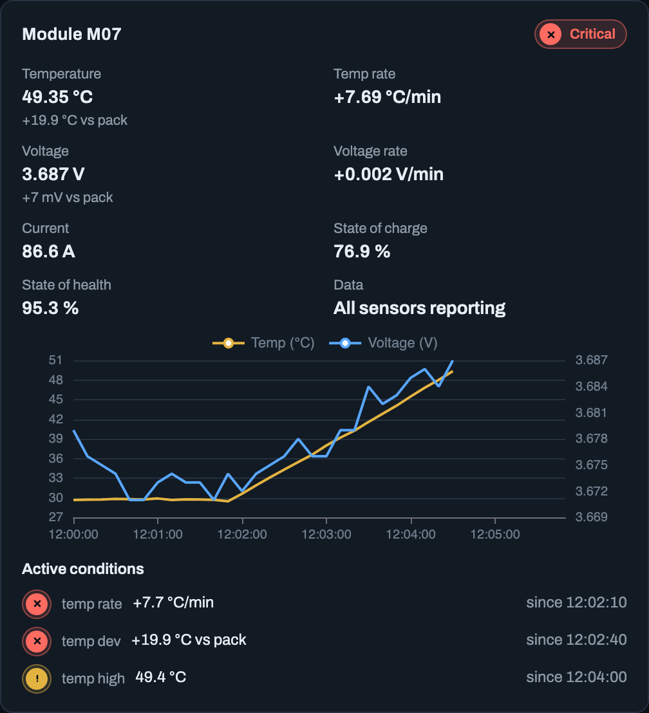
Module detail: every reading, deviation from the pack, rates, its own chart and the conditions behind the alert.
Event log (left): every raise, update, clear and ignored blip, exportable to CSV.
| Provided scenario | Result |
|---|---|
| Normal operations | No alerts |
| Low voltage (M03) | Critical, 20 s after onset |
| Thermal rise (M07) | Critical at 33 °C, with forecast |
| Multiple heating | One M04–M06 alert |
| Sensor failure (M11) | Data fault, clears on recovery |
| Generated hazard | |
| Over-voltage · internal short | Diagnosed correctly |
| Thermal propagation | Source M07 identified |
| Pack-wide heating · low SOC | One pack-level alert |
| Generated edge case | Result |
|---|---|
| Stuck sensor (M08) | Data fault only |
| Single-sample spike | Ignored, logged |
| Comms loss (all 12) | One alert, not 12 |
| Missing module rows | Dropout, no crash |
| Heating + sensor dropout | Alert kept through dropout |
| Corrupted values | No hazards, all reported |
| Messy format, out of order | Cleaned, no false alarms |
| Empty / header-only file | Clear error message |
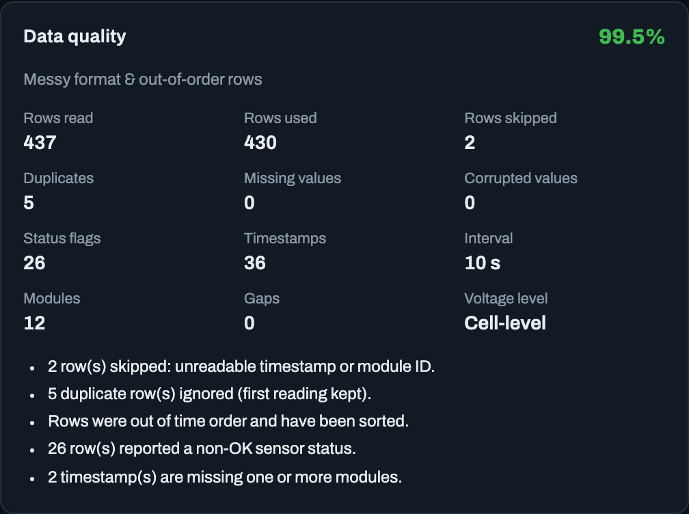
Data-quality panel on the messy file: skipped rows, duplicates and re-sorting are reported, not hidden.
npm test · tools/validate.py12The same detection engine, thresholds and tests, carried through to fleet operations: where each bus is, what its driver should do, and who is told when nobody responds.
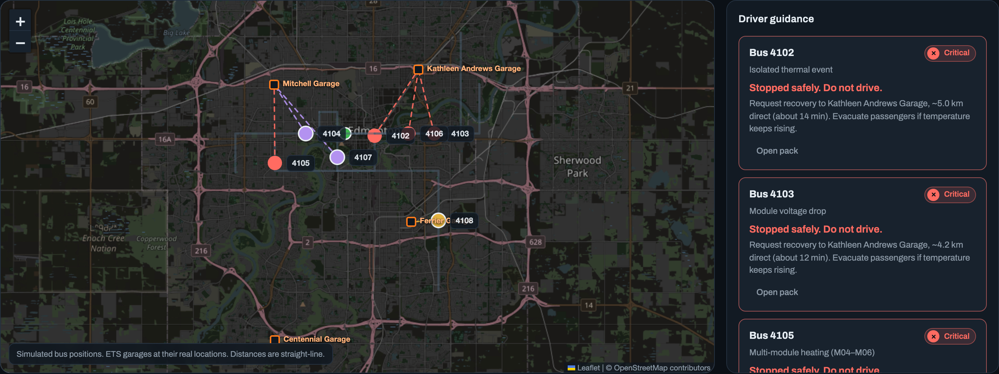
Fleet overview with live map: eight buses ranked by severity. Simulated positions on Edmonton, the four real ETS garages, and a line from every troubled bus to its nearest garage with driver guidance (stop safely, return to depot, or request a tow). The same map and guidance appear in each bus's pack dashboard and its alert cards.
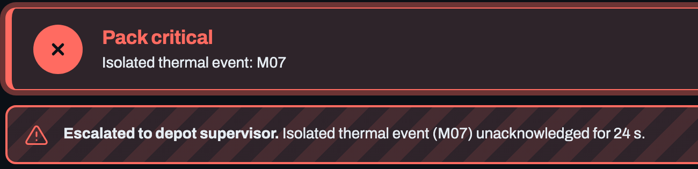
Escalation: a critical left unacknowledged for 20 s is escalated to the depot supervisor, with optional desktop notifications.
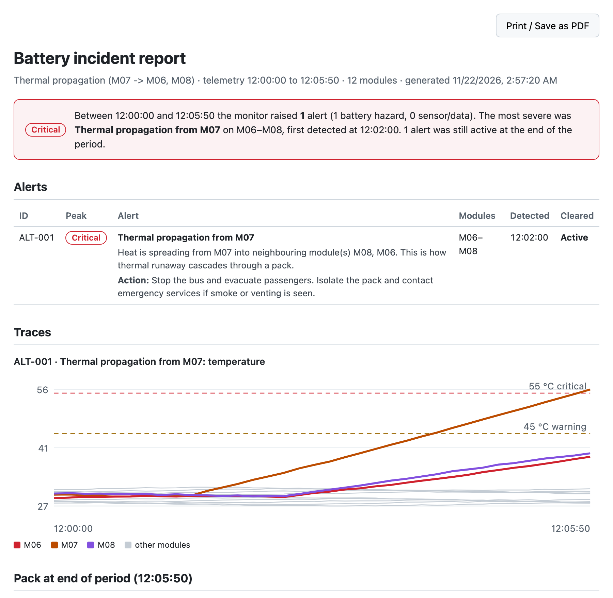
Incident report: a printable summary with every alert, its action and traces.
Parsed in the browser. No server, nothing to configure.
What was missing, corrupted, duplicated or out of order.
Watch the status banner, pack map and alerts as faults develop.
Diagnosis, forecast, action; click the module for its detail and trend.
Then show the event log and export it to CSV.
The whole file is re-analysed instantly.
If the file cannot be read, the app explains why and keeps the previous dataset on screen. Runs fully offline from a local build.
Catch the faulty module early, explain it clearly, and never cry wolf.
README · docs/DETECTION_LOGIC.md · docs/DATA_ANALYSIS.md · npm test
batter-eye.web.app